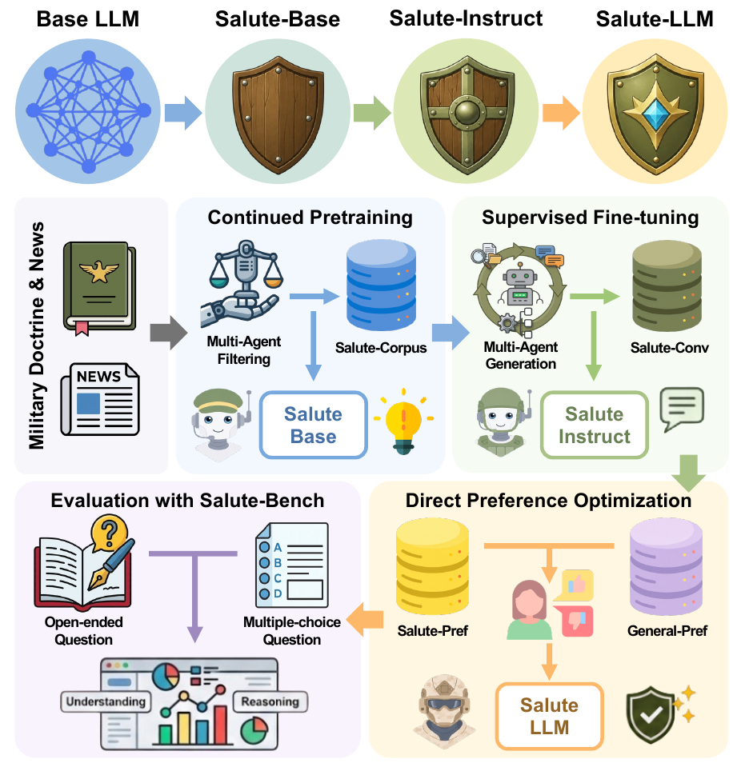
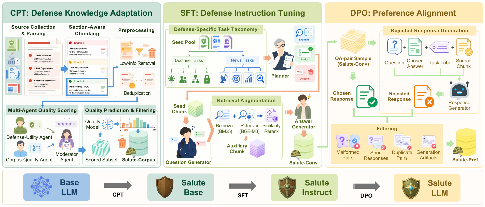

Salute-Bench · MCQ accuracy
86.02%+8.22 percentage pointsover Ministral-3-8B-Instruct, the strongest non-SALUTE 8B MCQ baseline.
Table 4 ↗Findings of EMNLP 2026
arXiv:2609.15022v1 September 2026
01 / The framework
SALUTE connects data construction, model adaptation, and evaluation for defense-domain language models. Military doctrine and defense news provide the foundation for a curated corpus, grounded instructions, preference pairs, and a held-out benchmark.
Starting from Qwen3-8B-Base, continual pretraining, two-stage supervised fine-tuning, and preference alignment produce Salute-LLM.
Approximate training-resource sizes · Sections 3.1–3.3
Read the methodology
Inside the method

Qwen3-8B-Base → Salute-LLM
Continual pretraining combines Salute-Corpus with 10.2M general replay tokens to build a defense-domain knowledge foundation.
02 / Experimental results
Salute-LLM leads the compared 8B-scale models on Salute-Bench while retaining competitive general capabilities. All scores below are reported in the paper.
Salute-Bench · MCQ accuracy
86.02%+8.22 percentage pointsover Ministral-3-8B-Instruct, the strongest non-SALUTE 8B MCQ baseline.
Table 4 ↗Salute-Bench · Open-ended average
64.51/100+3.68 pointsover Tulu-3-8B, the strongest non-SALUTE 8B open-ended baseline.
Table 4 ↗General benchmarks · Mean
64.69/100+1.16 points vs. Qwen3-8BAcross MMLU, TruthfulQA, ARC, IFEval, GSM8K, and GPQA.
Table 5 ↗| Model | Correctness | Completeness | Relevance | Overall | OE avg. | MCQ acc. (%) |
|---|---|---|---|---|---|---|
| Open-weight baselines | ||||||
| Qwen3-8B-Base | 55.35 | 47.73 | 70.27 | 50.74 | 56.02 | 72.04 |
| Qwen3-8B | 54.70 | 46.95 | 69.34 | 49.85 | 55.21 | 77.28 |
| Llama-3.1-8B-Instruct | 47.29 | 45.77 | 59.11 | 45.72 | 49.47 | 70.20 |
| Ministral-3-8B-Instruct | 53.14 | 48.24 | 63.64 | 48.94 | 53.49 | 77.80 |
| Tulu-3-8B | 58.59 | 56.31 | 71.90 | 56.52 | 60.83 | 63.00 |
| Granite-3.3-8B-Instruct | 54.48 | 50.85 | 68.67 | 52.03 | 56.51 | 71.63 |
| SALUTE variants | ||||||
| Salute-8B-Base | 58.89 | 54.60 | 73.20 | 56.02 | 60.68 | 78.52 |
| Salute-8B-Instruct | 60.62 | 56.71 | 78.47 | 58.17 | 63.49 | 85.09 |
| Salute-LLM | 60.91 | 59.87 | 77.71 | 59.53 | 64.51 | 86.02 |
| Strong reference models | ||||||
| Qwen3-30B | 61.82 | 56.30 | 75.91 | 57.30 | 62.83 | 78.11 |
| GPT-5 | 72.85 | 65.20 | 84.23 | 66.88 | 72.29 | 92.18 |
MCQ reports accuracy (%). GPT-OSS-120B scores open-ended answers on correctness, completeness, relevance, and overall quality; raw 1–5 scores are rescaled to 0–100. OE avg. is their mean.
Salute-LLM achieves the highest MCQ accuracy and OE average among the compared 8B-scale models. Qwen3-30B and GPT-5 are stronger reference models and are shown separately.
| Model | Mean | MMLU | TruthfulQA | ARC | IFEval | GSM8K | GPQA |
|---|---|---|---|---|---|---|---|
| Open-weight baselines | |||||||
| Qwen3-8B-Base | 63.95 | 76.94 | 50.99 | 64.41 | — | 85.67 | 41.74 |
| Qwen3-8B | 63.53 | 72.04 | 53.16 | 57.16 | 76.34 | 85.44 | 37.05 |
| Llama-3.1-8B-Instruct | 62.72 | 68.66 | 55.04 | 60.49 | 73.75 | 83.16 | 35.26 |
| Ministral-3-8B-Instruct | 62.16 | 76.44 | 63.88 | 63.05 | 52.12 | 79.75 | 37.72 |
| Tulu-3-8B | 62.56 | 62.22 | 60.34 | 55.20 | 76.34 | 88.70 | 32.58 |
| Granite-3.3-8B-Instruct | 60.86 | 65.16 | 66.64 | 60.23 | 64.51 | 76.72 | 31.91 |
| SALUTE variants | |||||||
| Salute-8B-Base | 62.96 | 76.96 | 48.61 | 63.82 | — | 84.83 | 40.62 |
| Salute-8B-Instruct | 61.72 | 74.69 | 48.90 | 59.47 | 64.87 | 81.57 | 40.84 |
| Salute-LLM | 64.69 | 75.35 | 52.31 | 61.00 | 70.97 | 86.35 | 42.19 |
| Strong reference models | |||||||
| Qwen3-30B | 69.10 | 81.00 | 60.04 | 59.98 | 73.75 | 94.76 | 45.08 |
| GPT-5 | 82.39 | 85.97 | 81.72 | 95.90 | 84.47 | 94.31 | 52.00 |
Mean is the macro-average over applicable benchmarks. IFEval is not evaluated for base models (—), so their means cover five tasks; instruction-model means cover six.
Salute-LLM has the highest reported general mean among the compared 8B-scale models. Individual-task results vary; its GPQA score is 42.19.
| Variant | CPT | SFT | DPO | OE avg. | MCQ acc. (%) | General mean |
|---|---|---|---|---|---|---|
| Base | — | — | — | 56.02 | 72.04 | 63.95 |
| CPT-only | ✓ | — | — | 60.68 | 78.52 | 62.96 |
| SFT-only | — | ✓ | — | 62.12 | 80.26 | 61.14 |
| CPT → SFT | ✓ | ✓ | — | 63.49 | 85.09 | 61.72 |
| SFT → DPO | — | ✓ | ✓ | 63.54 | 84.58 | 64.58 |
| Full | ✓ | ✓ | ✓ | 64.51 | 86.02 | 64.69 |
All variants start from Qwen3-8B-Base. The full pipeline scores highest across all three reported metrics. General means use applicable tasks, excluding IFEval for base variants.
03 / Salute-Bench
Evaluate understanding across doctrine and defense news with eight task categories.
Four choices. One correct answer. Assess domain knowledge with exact-match accuracy.
973evaluation questions
Questions with reference answers. Assess correctness, completeness, relevance, and overall quality.
2,638evaluation questions
04 / A closer look
A real record from each downloadable dataset.
05 / Citation
If you use SALUTE in your research,
please cite our paper.
@misc{park2026salute,
title = {SALUTE: Benchmarking and Adapting LLMs
for the Defense Domain},
author = {Hyeongcheol Park and Sumin In and
Suyeon Myeong and Hogun Park and
Sangmin Kim and Moonhyun Lee and
Daekyeong Park and Sangpil Kim},
year = {2026},
eprint = {2609.15022},
archivePrefix = {arXiv},
primaryClass = {cs.CL},
url = {https://arxiv.org/abs/2609.15022v1}
}